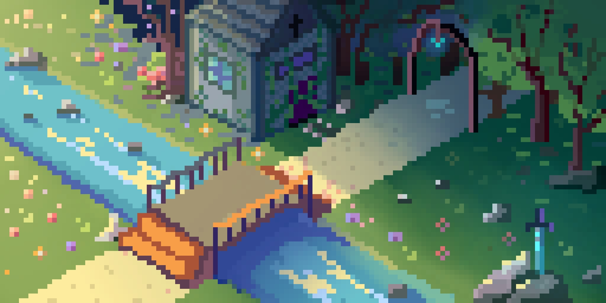
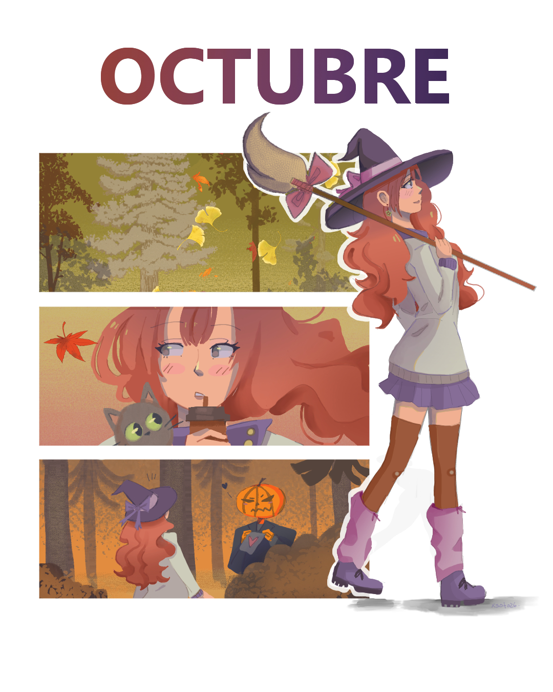
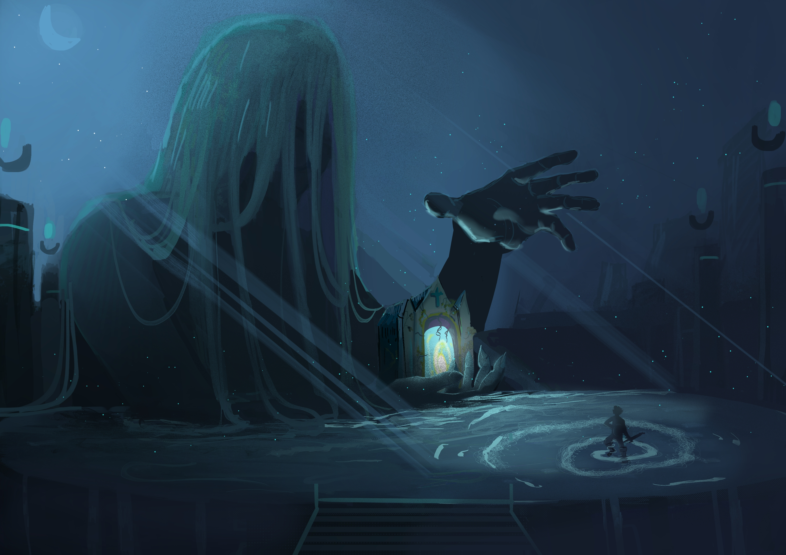
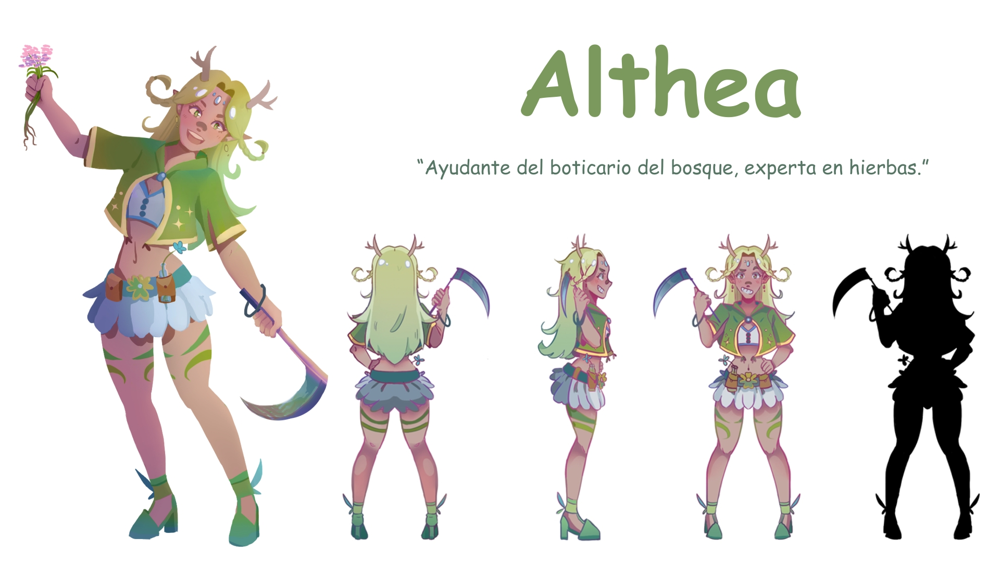
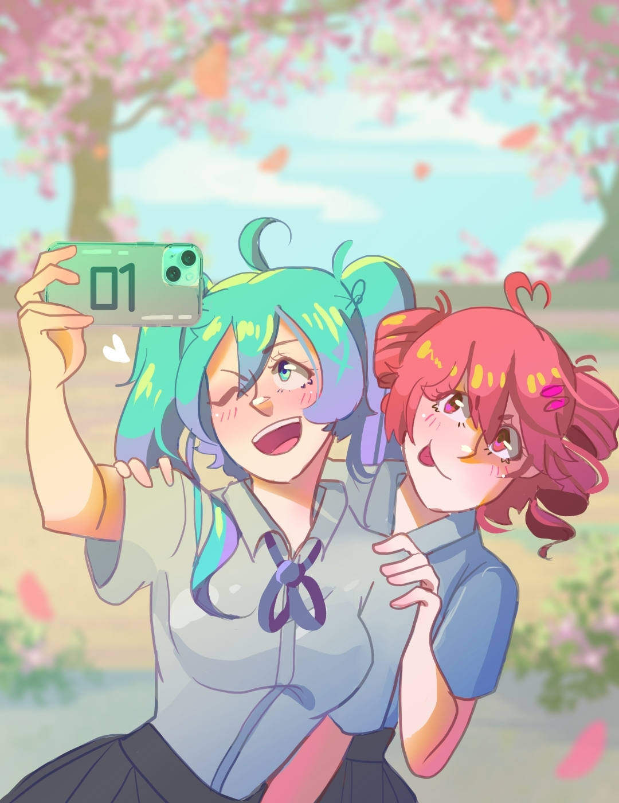
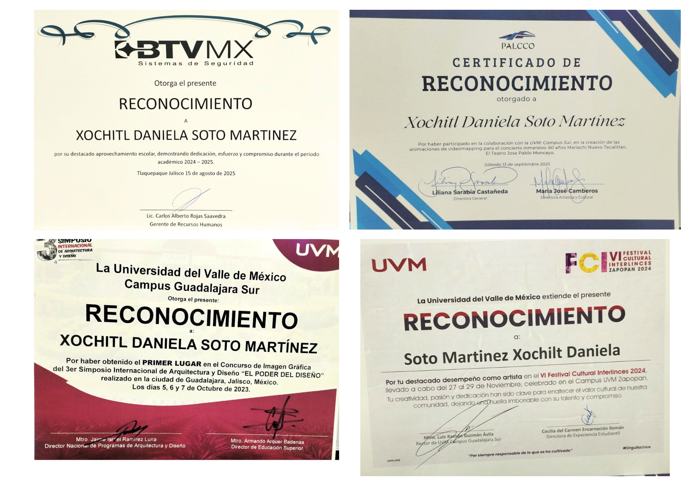

EscenarioCamino del peregrino
Entrada al bosque de las luciérnagas
Illustration & Animation 2026

A.K.A Hanna Sato
¡Hola! Soy estudiante de Ingeniería en Animación y Interactividad. Me enfoco principalmente en el 2D, ilustrando y animando, aunque también tengo conocimientos en 3D. Este portafolio lo programé y creé yo misma.
Estudiante de 7.º semestre de Ingeniería en Animación y Interactividad en la Universidad del Valle de México Sur (UVM).

EscenarioEntrada al bosque de las luciérnagas

EscenarioZaalaz protege la entrada, quiere tu alma a cambio

Diseño de personaje para videojuegoAyudante de la boticaria

FanArtMiku y Teto
Empujar un congelador
Animaciones que he realizado en 2D
Algunos trabajos en los que he trabajado con animación en 3D
Conocimiento de captura de movimiento

EXTRASon algunos reconocimientos que he recibido